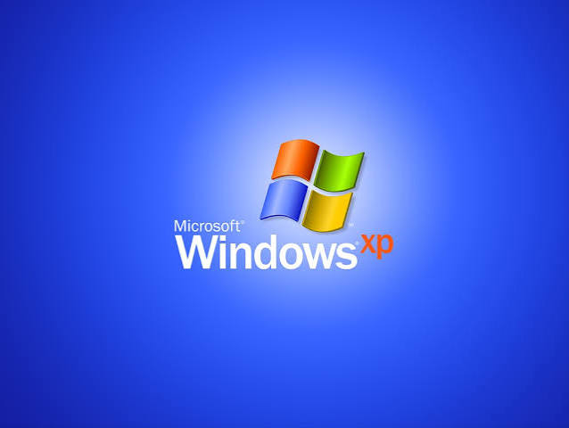
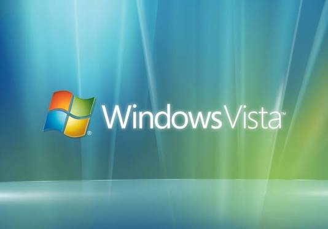
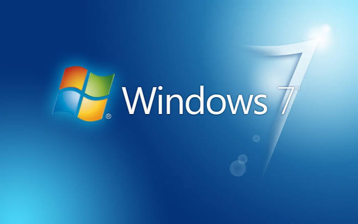
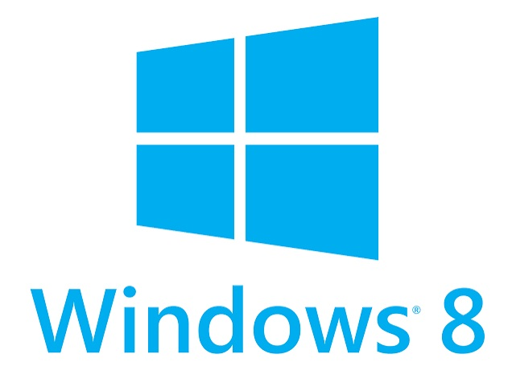
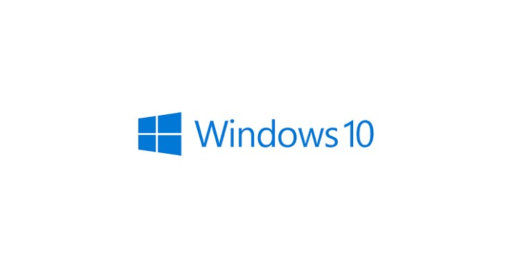
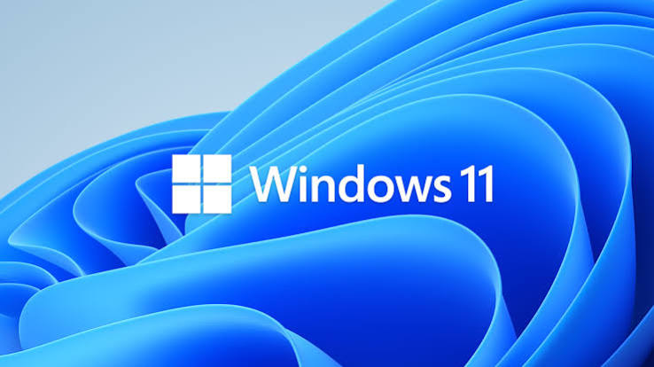

Do XP até o 11

Unificou a estabilidade do Windows NT com a facilidade de uso da linha 9x. Introduziu o visual azul e verde (Luna), o Menu Iniciar com duas colunas e suporte aprimorado a multimídia. Tornou-se um dos sistemas mais populares da história.
Windows XP (2001)

Focado em segurança e no visual Aero Glass (transparências e efeitos 3D). No entanto, sofreu com requisitos de hardware muito altos, incompatibilidade de drivers e excesso de alertas de segurança (UAC), sendo criticado pelo desempenho fraco.
Windows Vista (2007)

Corrigiu todas as falhas de desempenho do Vista mantendo os avanços visuais. Trouxe a nova Barra de Tarefas com o recurso Superbar (fixar aplicativos e pré-visualização de janelas) e o Aero Snap para organização de janelas.
Windows 7 (2009)

Mudança radical focada em tablets e dispositivos touch. Substituiu o Menu Iniciar tradicional pela Tela Inicial com Blocos Dinâmicos (Metro UI). A remoção do Menu Iniciar causou forte rejeição, levando ao lançamento do Windows 8.1 para restaurar a navegação clássica por mouse.
Windows 8/8.1 (2012/2013)

Unificou o ecossistema e trouxe de volta o Menu Iniciar (combinando o formato clássico com os blocos do Windows 8). Introduziu o assistente Cortana, a loja unificada de aplicativos, áreas de trabalho virtuais e o modelo de "Windows como serviço" com atualizações contínuas.
Windows 10 (2015)

Reformulação estética focada em simplicidade, com botões centralizados na barra de tarefas, cantos arredondados e suporte nativo a widgets. Introduziu requisitos de segurança mais rigorosos (como o chip TPM 2.0) e integração profunda com inteligência artificial via Copilot.
Windows 11 (2021)